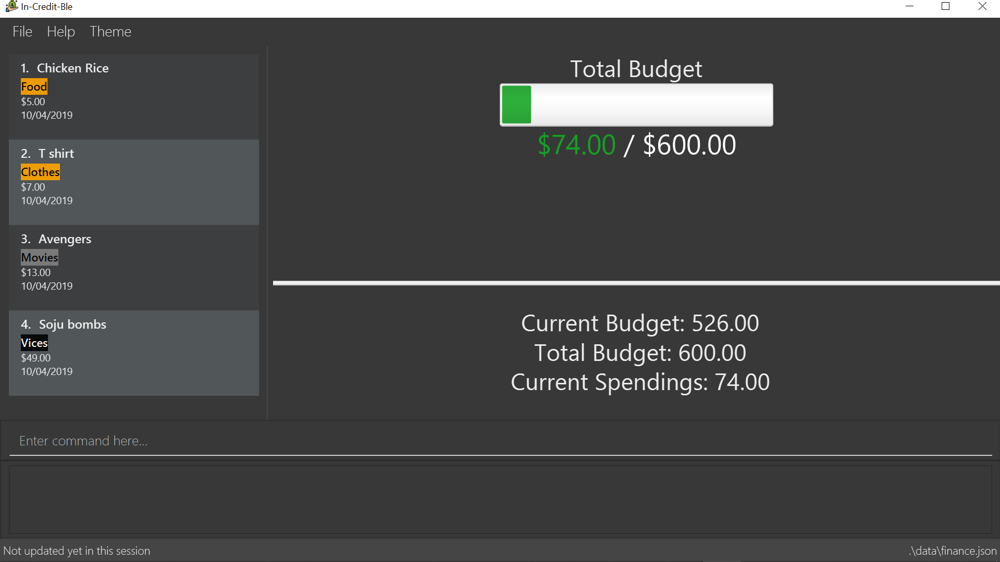
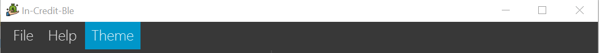

By: Team W17-3 Since: March 2019 Licence: MIT
1. Introduction
Welcome to the In-Credit-Ble User Guide! In-Credit-Ble is your all-in-one application in managing and tracking your personal finances. Our user-friendly interface will make it easy for you to see how much you can safely spend within your budget and be more aware of your spending habits. If you are a fast typer, prefer to type over using your mouse and like to get things done efficiently, then this is the product just for you! In-Credit-Ble is designed for those who prefer to work with a Command Line Interface (CLI).
This user guide shows you how to get started using In-Credit-Ble. It also provides in-depth documentation on the different features and shows you how to perform basic In-Credit-Ble operations.
2. Quick Start
Follow these steps to get In-Credit-Ble up and running on your computer in no time!
-
Ensure you have Java version
9or later installed in your computer. You can download and install the required Java Development Kit here -
Download the latest
In-Credit-Ble.jarfile here. -
Copy the file to the folder you want to use as the home folder for your finance tracker.
-
Double-click the file to start the app. The GUI should appear in a few seconds as shown below. The In-Credit-Ble finance tracker is loaded with example expense records and budget is still not set.
Figure 1. UI upon launching the application -
Type the command in the command box and press Enter to execute it.
e.g. typinghelpand pressing Enter will open the help window and show the list of commands. -
Some example commands you can try:
-
help: opens the In-Credit-Ble user guide -
clear: clears the existing Finance Tracker to start with a Finance Tracker with no expense records -
set: sets the total budget for Finance Tracker -
allocate: allocates budget to a certain category (within the total budget) -
spend: adds an expense record to the finance tracker
-
-
Refer to Section 4, “Features” for details of each command.
3. Graphical User Interface Introduction
This section will explain to you the Graphical User Interface (GUI) of In-Credit-Ble Finance Tracker.
summary command)There are a total of 7 elements in the Graphical User Interface in In-Credit-Ble Finance Tracker as denoted by the different coloured boxes in Figures 2 and 3.
3.1. Menu Bar
This element is denoted by the pink box in Figures 2 and 3.
The menu bar can be used to:
-
Exit the program under
Filetab -
Open the Help page to view commands available under
Helptab -
Change the colour theme of the application under
Themetab
3.2. Records List Panel
This element is denoted by the yellow box in Figures 2 and 3.
In the Record List Panel, the list of all your expenditures are recorded here. This panel is scrollable to view all your expense records.
To find specific records based on name, category, amount or date, use the search command.
To list all your expense records again after searching for particular records,
use the command list
Each record is tagged with an index number before the record name.
The index is used in command such as delete, edit and select
3.3. Budget Panel
This element is denoted by the green box in Figures 2 and 3.
The budget panel gives you a simple yet effective overview of the total expenses spent so far against the budget that you set for yourself.
As you add more expense records into the finance tracker, the budget panel will change colour according to how close you are to your budget.
See:
-
setcommand to see how to set a budget in the finance tracker -
spendcommand to see how to add expense records into the finance tracker.
-
The budget progress bar will be green if you are still within your budget as shown in Figure 6
-
The budget progress bar will turn orange if your expenditure is above 80% of your total budget as shown in Figure 7
-
The budget progress bar will turn red if your expenditure exceeded your budget as shown in Figure 8
3.4. Browser Panel
This element is denoted by the brown box in Figure 2.
The browser panel gives you a numerical summary of your total budget.
|
The current budget will show a negative number should you exceed your budget to let you know the amount you exceeded the budget set for yourself. |
3.5. Summary Panel
This element is denoted by the red box in Figure 3.
The summary panel gives you a nice illustrated summary of your current spending so far in
different categories. To change the browser panel to summary panel, use the summary command.
To change back to the browser panel, simply type in the summary command once again.
3.6. Command Box and Result Display
These elements are denoted by the black and blue boxes in Figures 2 and 3 respectively.
The command box is the place for users to type in their commands. Refer to Section 4, “Features” for details of each command.
The result box displays the results after each command is executed.
This is where the allocated category budgets will be shown when show command is executed.
3.7. Status Footer Bar
This element is denoted by the purple box in Figures 2 and 3. The left side of the status footer bar shows the time and date of the last update to the finance tracker. The right side of the status footer bar shows where the storage file for the updated data is saved to.
4. Features
This section describes the various features In-Credit-Ble has to offer. Examples are also included to give you step-by-step instructions on how to use the different commands.
Command Format
-
Words in
UPPER_CASEare the parameters to be supplied by the user e.g. inset $/AMOUNT,AMOUNTis a parameter which can be used asset $/200.00. -
Items in square brackets are optional e.g
search KEYWORD [MORE_KEYWORDS]can be used assearch clothesor assearch cake lunch. -
Items with
… after them can be used multiple times including zero times.
4.1. Budget Management
4.1.1. Setting a budget: set
This command enables you to set a fixed budget for a month/week (Time limit to be implemented). The current budget will be modified based on the transaction records. The command format is as follows:
Format: set $/AMOUNT
4.1.2. Allocating budget based on categories: allocate
You can use this command to set a budget for a category in In-Credit-Ble Finance Tracker.
Alias: allo
Format: allocate $/AMOUNT c/CATEGORY
|
|
Take note that you can still spend over the category budget set. The rationale is for you to be able to see how much you have exceeded your budget allocated in that category so that you will be able to better plan your expenditure in the future. |
4.1.3. Showing allocated budget and spending in categories: show
You can use this command to see the budget allocated to and spending in categories in In-Credit-Ble Finance Tracker.
Alias: showCatBudget
Format: show, showCatBudget
|
4.2. Expense Entry Management
4.2.1. Adding an expense: spend
You can keep track of how much you have spent by adding an expense entry to In-Credit-Ble.
Alias: add
Format: spend n/NAME $/AMOUNT [d/DATE] c/CATEGORY [r/DESCRIPTION]
|
4.2.2. Editing an entry: edit
You can easily edit any part of an existing entry in the records.
Index refers to the index number shown in the list.
Alias: e
Format: edit INDEX [n/NAME] [$/AMOUNT] [d/DATE] [c/CATEGORY] [r/DESCRIPTION]
|
4.2.3. Deleting an entry: delete
You can delete an entry in the record by specifying the entry’s index number.
Deleted entries can be recovered via the undo command.
Alias: d, del
Format: delete INDEX
|
4.3. Records Management
4.3.1. Listing all entries: list
You can see all the entries you have entered, as long as they are not deleted entries.
This command can be used to reset
the list after you filter the records using the search command.
|
Alias: l, ls
Format: list
4.3.2. Locating entry based on name/category: search
You can easily search for entries in the records using a name, category or date as keywords. The total sum of money spent on all the results of the search will also be shown.
Alias: find
Format: search -FLAG KEYWORD [MORE_KEYWORDS]
|
4.3.3. Sorting the entries according to name/amount/date/category: sort
You can choose to sort the list of entries by name, amount, date or category.
Format: sort -FLAG [ORDER]
|
Examples (default ordering):
-
sort -name:
Sorts the list of records by name in lexicographical order (ascending order) -
sort -amount:
Sorts the list of records by amount from largest to smallest (descending order) -
sort -date:
Sorts the list of records by date with the latest at the top (descending order) -
sort -cat:
Sorts the list of records by category in lexicographical order (ascending order)

sort command (default ordering)More examples:
-
sort -name -desc:
Sorts list of records by name in reverse lexicographical order.

To sort any list conveniently in the reverse order, use the reverse command!sort -namereverseList will be sorted by name in reverse lexicographical order. |
4.3.4. Reversing the entries: reverse
You can also reverse the order of the list of entries in the records.
Alias: rev
Format: reverse

4.3.5. Showing summary of records: summary
You can see the summary of your previous expenditures represented as a pie chart, with each sector representing a category. Each sector is labelled with name and total expenditure for the category, allowing you to have an overview of how your spending habit is like.
You can also specify a report period.
Alias: overview
Format: summary or summary #/PERIOD_AMOUNT p/PERIOD
|
| The implementation of this feature is still ongoing. It will be completed by v1.4. |
4.4. Miscellaneous
4.4.1. Viewing help: help
Forgotten which commands to use? You can easily find the commands you need to navigate the software by using the following command:
Format: help
4.4.2. Undoing previous command : undo
You can restore the program to the state before the previous undoable command was executed.
Alias: u
Format: undo
|
Undoable commands:
|
4.4.3. Redoing the previously undone command : redo
You can reverse the most recent undo command.
Alias: r
Format: redo
4.4.4. Changing theme of application: theme
You can change the theme of the application with pre-set colour themes specified.
Alias: colour
Format: theme COLOURTHEME

Figure 17. Menu Bar with Theme tab
|
4.4.5. Listing entered commands: history
You can list all the commands you have entered in reverse chronological order.
Alias: h, hist
Format: history
4.4.6. Clearing all entries : clear
You can delete all existing entries in the records and reset your budget to $0.00.
Alias: c, clr
Format: clear
4.4.7. Exiting the program : exit
You can quit the program at any point in time when you use this command.
Alias: quit
Format: exit
4.4.8. Saving the data
The finance record and allocated budget will be saved in the hard disk automatically after any command that changes the data. There is no need for you to save manually.
4.5. Upcoming features
4.5.1. Establish saving patterns based on record and derive projected savings/expenses in a time span [coming in v2.0]
Your monthly finance records will be archived at the end of the month. This information will be used to derive the projected savings and expenses based on your typical spending patterns.
4.5.2. Links to financial articles [coming in v2.0]
You will be able to list categories of financial articles that you are interested in (e.g. investment, stock market). Based on these categories, In-Credit-Ble will use Google API to search for related articles for you to view.
4.5.3. Separate expenditures based on methods of payment (Cash, Visa, Paylah) [coming in v2.0]
In-Credit-Ble will link up with secure methods of payment such as payLah, Visa/MasterCard, Amex or Paypal to allow tracking of your cashless transactions. By paying through _In-Credit-Ble, transactions will automatically be updated and recorded as entries.
5. FAQ
Q: How do I transfer my data to another Computer?
A: You can install the app in the other computer and overwrite the empty data file it creates with the file that contains the data of your previous In-Credit-Ble folder.
Q: Will the application support different currency?
A: At the current version, the application is unable to support transactions record in different currency. You will need to calculate and enter your input based on your local currency.
In-Credit-Ble aims to support multi-currency transactions in v2.0.
6. Command Summary
6.1. Budget Management
| Command | Command Format | Alias | Example |
|---|---|---|---|
Set Budget |
|
- |
|
Allocate budgeting based on categories |
|
|
|
Show allocated category budget and spending |
|
|
- |
6.2. Expense Entry Management
| Command | Command Format | Alias | Example |
|---|---|---|---|
Add expense |
|
|
|
Edit an entry |
|
|
|
Select an entry |
|
|
|
Delete an entry |
|
|
|
6.3. Records Management
| Command | Command Format | Alias | Example |
|---|---|---|---|
List all entries |
|
|
- |
Locate entry based on name, category or date |
|
|
|
Sort the entries based on name, category, date, amount |
|
- |
|
Reverse all entries |
|
|
- |
Show summary of records |
|
|
|
*Valid flags: -name→ Name; -cat → Category; -date → Date; -amount (only for sort command) → Amount;
**Valid orders: -asc → ascending order; -desc → descending order
6.4. Miscellaneous
| Command | Command Format | Alias | Example |
|---|---|---|---|
Set data file |
|
- |
|
Help |
|
- |
- |
Undo previous command |
|
|
- |
Redo previously undone command |
|
|
- |
Change colour theme of application |
|
|
theme light |
List entered commands |
|
|
- |
Clear all entries |
|
|
- |
Exit the program |
|
|
- |
7. Glossary
- Amount
-
The amount of money for expenditure and budget
- Category
-
The category that an entry belongs to.
- Entry
-
A listed item/activity tracked by the application. It generally consists of the name, amount and date along with a compulsory category tag
- Records
-
The list of all entries stored in the application